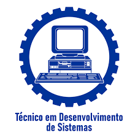

Em um mundo cada vez mais conectado e digital, a demanda por profissionais capazes de criar, manter e inovar com tecnologia nunca foi tão alta. Se você tem paixão por lógica, resolução de problemas e o desejo de construir as ferramentas digitais do futuro, o Curso Técnico em Desenvolvimento de Sistemas, integrado ao Ensino Médio profissionalizante, é o caminho ideal para você. Essa modalidade de ensino oferece uma formação completa e diferenciada, combinando o conhecimento essencial do Ensino Médio tradicional (Linguagens, Ciências Humanas e da Natureza, Matemática) com uma sólida base técnica e prática. Ao final do curso, você terá não apenas o diploma de conclusão do Ensino Médio, mas também o título de Técnico em Desenvolvimento de Sistemas, uma credencial valiosa que o torna apto a ingressar imediatamente no mercado de trabalho ou seguir com vantagem para o ensino superior na área de tecnologia.
Um técnico em desenvolvimento de sistemas pode atuar em diferentes frentes, como criação de softwares, desenvolvimento de aplicativos, construção de sites e sistemas web, suporte tecnológico e análise de processos. Sua principal responsabilidade é programar e elaborar soluções digitais, além de oferecer suporte e assegurar o funcionamento adequado dos sistemas.
O mercado de atuação para o técnico em Desenvolvimento de Sistemas é favorável, com variadas oportunidades em empresas de tecnologia, startups, instituições educacionais e setores públicos. Esses profissionais podem exercer atividades como criação de softwares, programação de sites e aplicativos, manutenção de sistemas e atendimento técnico. A procura por especialistas da área cresce devido ao avanço contínuo da tecnologia e à ampliação da demanda por soluções digitais em diferentes segmentos.